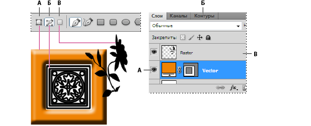

Сведения о рисовании
Общие сведения о фигурах и контурах
Рисование в Adobe Photoshop включает в себя создание векторных фигур и контуров. Photoshop позволяет рисовать с помощью любого из инструментов группы «Фигура», инструмента «Перо» или «Свободное перо». Режимы работы каждого инструмента можно изменить на панели параметров.
Перед началом рисования в Photoshop на панели параметров необходимо выбрать режим рисования. Выбранный режим рисования определяет, создается ли векторная фигура в отдельном слое, рабочий контур в существующем слое или растровая фигура в существующем слое.
Векторные фигуры представляют собой прямые и кривые линии, рисуемые с помощью групп инструментов «Фигура» или «Перо». Векторные фигуры не зависят от разрешения: их края остаются четкими при изменении размера, печати на принтере PostScript, сохранении в PDF-файле и импорте в векторные графические приложения. Существует возможность создания библиотек произвольных фигур, а также редактирования контура фигуры и атрибутов (например, типа обводки, цвета заливки и стиля).
Контуры — это замкнутые линии, которые можно использовать для выбора фрагмента изображения, а также залить или обвести произвольным цветом. Форму контура несложно изменить путем редактирования узловых точек.
Рабочий контур — это временный контур, который появляется на панели «Контуры» и определяет границы фигуры.
Контуры можно использовать несколькими способами.
Сохраненный контур можно назначить обтравочным контуром, что позволит сделать часть изображения прозрачной при экспорте в программу верстки или векторный редактор.
Режимы рисования
При работе с группами инструментов «Фигура» и «Перо» доступны три различных режима рисования. Режим может быть выбран с помощью значков на панели параметров, когда активны инструменты групп «Фигура» или «Перо».
Слой-фигура Создание фигуры в отдельном слое. Для создания слоя-фигуры можно использовать либо группу инструментов «Фигура», либо группу инструментов «Перо». Слои-фигуры легко перемещать, масштабировать, выравнивать и распределять, благодаря чему они очень удобны при создании изображений для веб-страниц. В одном слое можно нарисовать несколько фигур. Слой-фигура состоит из слоя-заливки, определяющего цвет фигуры, и связанной с ним векторной маски, задающей границы фигуры. Границы фигуры представляют собой контур, который появляется на панели «Контуры».
Контуры Этот режим позволяет рисовать в текущем слое рабочий контур, который можно использовать для выбора фрагмента изображения, создания векторной маски, а также заливки или обводки произвольным цветом с целью создания растрового изображения (примерно так же, как это можно было сделать с помощью инструмента раскраски). Рабочий контур считается временным, пока не будет сохранен. Контуры отображаются на панели «Контуры».
Заливка пикселов Режим раскраски в слое напрямую — это примерно так же, как и с помощью инструментов окрашивания. При работе в этом режиме создаются не векторные, а растровые изображения. Создаваемые фигуры можно обрабатывать так же, как и любое растровое изображение. В этом режиме работают только инструменты группы «Фигура».

Параметры рисования
A. Слои-фигуры Б. Контуры В. Заливка пикселов